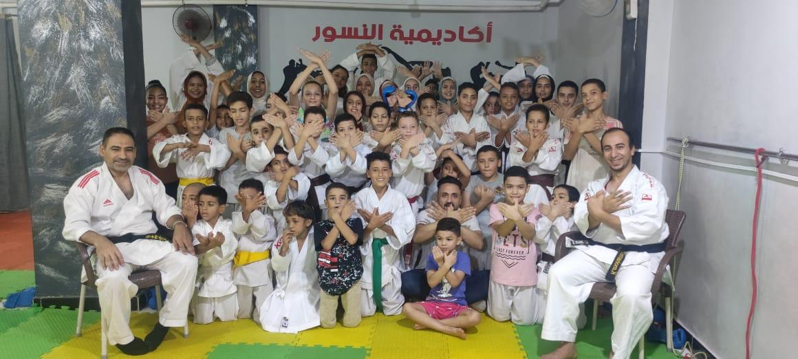
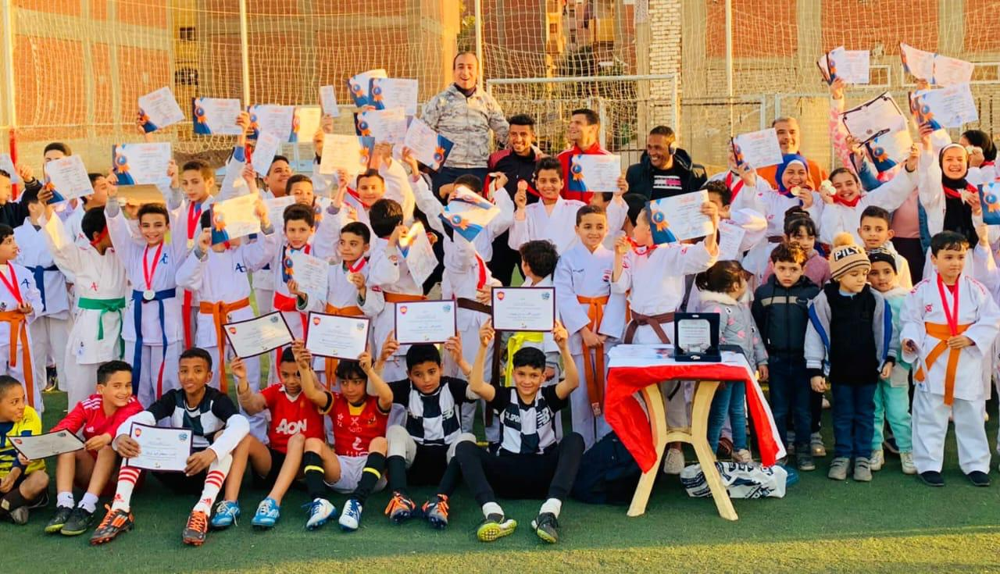

اهمية رياضة الكاراتية
هدف الكاراتيه الهدف من لعبة الكاراتيه هو هزيمة الخصم من خلال استخدام اللكمات والركلات والرمي من أجل الحصول على أكبر قدر ممكن من النقاط في نهاية المباراة، ومن يحصل على أكبر قدر من النقاط يكون الفائز، وتعد الكاراتيه نمطاً قتالياً، فهي تساعد اللاعب على أن يتمتع بمهارات عالية ويتعين على جميع المنافسين أن يتمتعوا بمستوى عالٍ من المهارة والخبرة والسرعة والبراعة للفوز.


اهمية رياضة الكاراتية
يف يمكن الفوز في مباراة الكاراتيه يتم الفوز بالمباراة من خلال إحدى التالية: من خلال الحصول على أعلى مجموع في نهاية النزال. من خلال التقدم بثماني نقاط أو أكثر خلال المباراة. جعل الخصم غير قادر على الاستمرار. في حال كان الخصم غير مؤهل. في حال التعادل في عدد النقاط، يتشاور الحكام لتحديد الفائز.[٢] ما هي أحزمة الكاراتيه ارتدى العديد من ممارسي الكاراتيه حزام الكراتيه وهو حزام مربوط حول زي التمرين، وغالباً ما تكون الأحزمة مصنوعة من القطن السميك، وتشير أيضاً إلى المستوى التدريبي أو المهاري لمرتديها